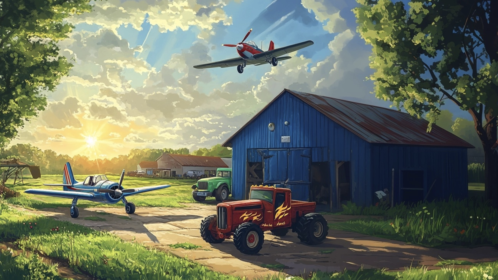
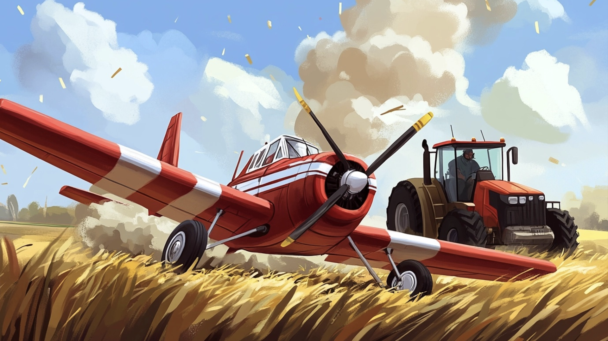
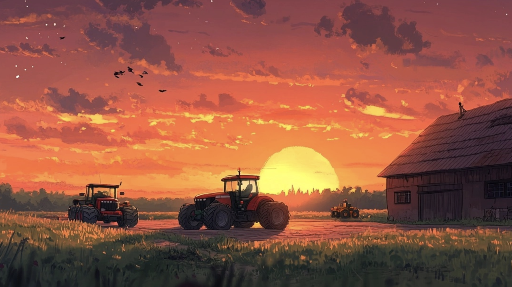

Byl jednou jeden krásný letní den, kdy slunce vyšlo nad letištěm a jemně ozářilo všechno kolem. Letiště nebylo velké, ale pro Kryštůfka a Matěje, dvě malá letadélka, bylo jako stvořené. Stálo na okraji vesnice a jeho ranvej se táhla mezi zelenými loukami plnými květin. Hangáry byly malované modrou barvou a na každé zdi bylo malé okénko, kterým dovnitř pronikalo ranní slunce. Když tam Kryštůfek s Matějem odpočívali, cítili se jako doma.
Letiště také obklopovaly stromy a malý rybníček, kde si občas létali odpočinout kachny. Traktůrek Pepík, jejich věrný kamarád, měl své místo v kůlně vedle ranveje. Pepík byl červeně zbarvený rychlý traktůrek s plameny namalovanými na bocích, který vždycky rád pomohl, kdykoli byl někdo v nesnázích.
Traktůrek Pepík byl hrdý na svůj zářivý vzhled a svou rychlost, a i když nemohl létat jako Kryštůfek s Matějem, vždy se snažil stíhat jejich pohyb po obloze. A Monster Truck Max? Ten byl velký, modrý a měl obrovská kola, se kterými dokázal přejíždět přes cokoli – přes kameny, louže nebo i malé kopečky v okolí letiště. Byl silákem party, ale i on měl dobré srdce a vždycky fandil, když jeho přátelé létali.

Ráno začínalo klidně. Na nebi bylo jen pár bílých obláčků, které pluly jako malé ovečky po modré obloze. Kryštůfek se protáhl ve svém hangáru a jeho vrtule se pomalu začala otáčet zatímco se ospale rozhlížel po hangáru. „Ahoj, Matěji!“ zavolal na svého kamaráda kterého spatřil ve vedlejším hangáru. „Dobré ráno, Kryštůfku!“ odpověděl Matěj, jehož modrá křídla vypadala jak samo nebe. „Jak ses vyspal?“ „Báječně, jsem naprosto odpočinutý.. nedáme si nějaké akrobatické kousky a závody?“ navrhl Kryštůfek zatím co si pomalu protahoval svá křídla. Hned po tom co si oba vyčistili vrtule a posnídali vydatnou a zdravou snídani se oba kamarádi rozhodli vzlétnout. Jejich kamarádi – traktůrek Pepík a Monster Truck Max – už bylo nachystaní ranveje a mávali jim na pozdrav když stoupali k obloze. „Ať se vám to dneska povede!“ křičel Pepík. „Těším se na ty nejlepší loopingy co umíte!“ dodal Monster Truck.
Kryštůfek a Matěj letěli rychle a svižně, jakoby byli součástí větru. Nejprve se pokusili udělat velký looping, oba se otočili ve vzduchu, až se zdálo, že jejich křídla kreslí do nebe obří kruhy. Nebe bylo nádherné, modré s několika bílými oblaky, přes které se občas prořítili, až po sobě zanechali malou mlžnou stopu. Pak přišel čas na závod. „Závod až k lesu a zpátky?“ navrhl Matěj. „Platí!“ vykřikl Kryštůfek a oba vyrazili. Ale ještě než stihli doletět k cíli, stalo se něco nečekaného. Matějovi se začal přehřívat motor.

„Pomoc, něco je špatně!“ volal zoufale Matěj. Kryštůfek si všiml kouře, který se z Matějova motoru začal valit. Okamžitě zamířil k němu. „Neboj se, Matěji! Hned to vyřešíme!“ řekl Kryštůfek a zamával na Pepíka, aby přivezl nářadí. Pepík i Monster Truck rychle přispěchali. Monster Truck Max opatrně podržel Matěje, zatímco Kryštůfek a Pepík opravovali jeho motor. Za chvíli bylo vše v pořádku a Matěj mohl pokračovat. „Děkuju vám kamarádi,“ řekl vděčně. „Kdyby vás nebylo, nevím, co bych si počal.“
Závod nakonec vyhrál Kryštůfek, ale Matěj se nezlobil. Oba si podali křídla a Matěj řekl: „Dneska jsi byl nejlepší, Kryštůfku. Příště to ale určitě vyhraju já!“ „Už se nemůžu dočkat.“ odpověděl Kryštůfek se smíchem.

Den pomalu ubíhal a slunce se začalo schovávat za obzor. Oba kamarádi se vrátili do svých hangárů, kde už je čekal teplý čaj a večeře. Když měli letadélka vyčištěné vrtule, zajeli každý do svého hangáru, zavřeli oči a brzy usnuli. Nebe nad nimi potemnělo a na obloze se objevily hvězdy. Byli šťastní, že mají jeden druhého a své kamarády, kteří je vždy podpoří.
A tak skončil jejich den plný závodů, smíchu a přátelství, až do dalšího krásného rána, kdy zase vzlétnou k modré obloze.
Jak letadla dělají loopingy:
Looping je akrobatický manévr, při kterém letadlo opisuje ve vzduchu celý kruh. Pilot musí mít dostatečnou rychlost a pak zatáhne řídící páku dozadu. To způsobí, že výškové kormidlo na ocase letadla se vychýlí nahoru a letadlo začne stoupat. Díky rychlosti a správnému úhlu letadlo pokračuje v kruhu - nejdřív letí nahoru, pak se otočí hlavou dolů a nakonec dokončí celý kruh.
Během loopingu působí na pilota odstředivá síla, která ho tlačí do sedadla. Tato síla může být několikrát větší než gravitace Země - říkáme tomu přetížení nebo "G síla". Zkušení akrobatičtí piloti musí být ve velmi dobré fyzické kondici, aby tyto síly zvládli. Zajímavé je, že ve vrcholu loopingu, když je letadlo hlavou dolů, pilot necítí, že by visel vzhůru nohama - odstředivá síla ho stále tlačí do sedadla!
Letadla létají díky tvaru svých křídel. Křídlo má speciální profil - nahoře je více zaoblené než dole. Když se letadlo pohybuje vpřed, vzduch proudící přes horní část křídla musí urazit delší vzdálenost než vzduch pod křídlem. To vytváří rozdíl tlaku - nahoře je nižší tlak než dole - a tento rozdíl vytváří vztlakovou sílu, která drží letadlo ve vzduchu. Čím rychleji letadlo letí, tím větší je vztlaková síla!